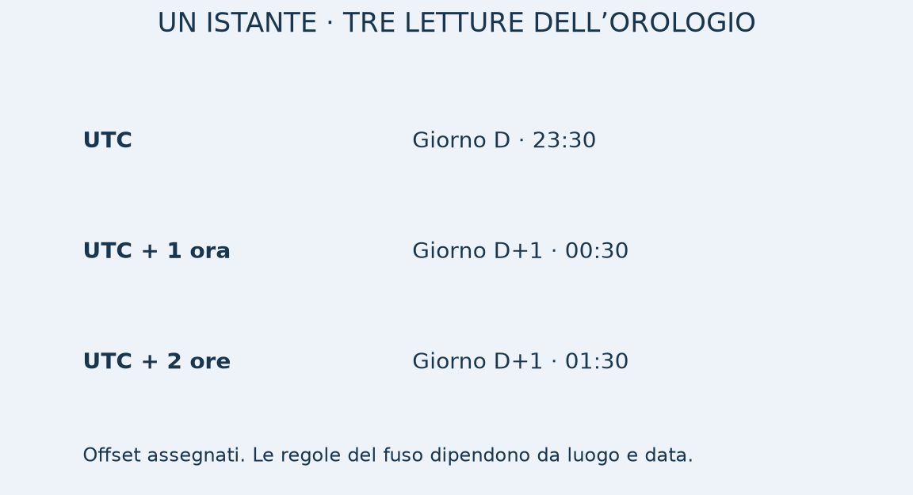
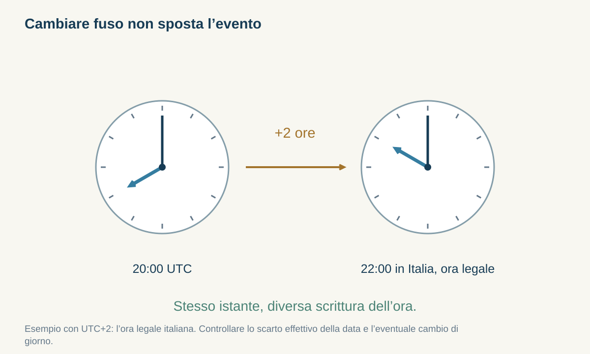
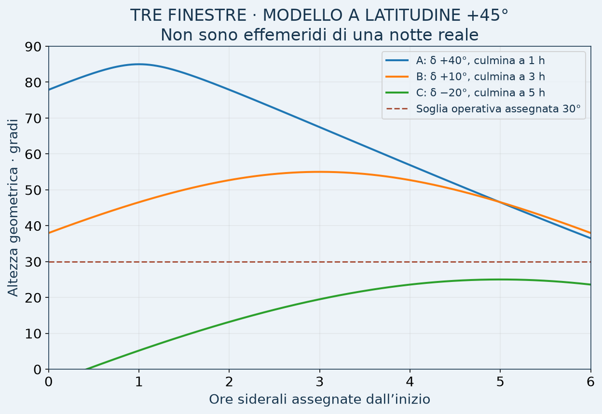

Un minuto scritto bene e una domanda scritta male
Due siti indicano un tramonto con alcuni minuti di differenza. Prima di scegliere il più preciso controlla se parlano della stessa città, dello stesso giorno e della stessa definizione. Un valore con secondi non è automaticamente più adatto all’osservazione di uno arrotondato al minuto.
Un’effemeride descrive una posizione o un evento come funzione del tempo, usando un modello e dati. Può riguardare il Sole, la Luna, un pianeta o un piccolo corpo. La tabella non vede le nuvole e non conosce l’albero davanti al tuo balcone: offre una previsione geometrica e, quando dichiarato, correzioni fisiche o convenzionali.
L’intestazione è parte del dato. Cerca corpo, centro dell’osservazione, posizione geografica, intervallo, scala temporale e sistema delle coordinate. Copiare soltanto la riga finale è come estrarre una misura di lunghezza senza l’unità.

Schema originale AD ASTRA; dati e ipotesi dichiarati nel testo.
Geocentrico e topocentrico
Una posizione geocentrica usa il centro della Terra come riferimento. Una posizione topocentrica usa un sito sulla superficie. Per la Luna la parallasse può essere importante; per una stella lontana il cambiamento del sito influisce soprattutto sulla trasformazione verso l’orizzonte locale.
Latitudine e longitudine determinano quale porzione del cielo vedi e come l’ora si traduce in orientamento della Terra. La quota e la forma del pianeta entrano nei calcoli più accurati. Un risultato per Roma non va riutilizzato come identico per Palermo soltanto perché entrambe sono in Italia.
Per una cometa o un asteroide, anche l’incertezza orbitale conta. Un punto nominale può avere un’area di possibili posizioni. Per oggetti vicini o orbite poco vincolate, il confronto fra siti richiede dati e precisione adeguati. Non trasformare la previsione in una promessa di rilevamento.
UTC, ora civile e tempo siderale
è un riferimento temporale coordinato. L’ora civile locale applica un offset secondo le regole del luogo e della data. In Italia si distingue normalmente fra ora standard e ora legale; non basta memorizzare un numero valido per tutto l’anno e per tutti i paesi.

Il tempo siderale descrive l’orientamento della Terra rispetto a riferimenti celesti. Una sua ora non va scambiata con la stessa lettura di un orologio civile. Nel sistema equatoriale l’angolo orario è legato alla differenza fra tempo siderale locale e ascensione retta, con unità coerenti.
Nei servizi professionali puoi incontrare UT1, TT o TDB. Hanno scopi diversi e differenze definite; non trattarle come sinonimi solo perché usano un formato simile. Per la prima pianificazione quotidiana concentrati sulla scala dichiarata e sulla conversione civile corretta, chiedendo maggiore precisione quando l’evento lo richiede.
Laboratorio: attraversare la mezzanotte
Il cursore rappresenta minuti trascorsi da mezzanotte UTC di un giorno astratto D. Scegli un offset civile assegnato: non è un calcolo delle regole storiche o future di un fuso. Il laboratorio somma l’offset, conserva il cambio di giorno e rende visibile il risultato. Non simula secondi intercalari.
Attraversare la mezzanotte cambia anche la data. Per esempio, alle 00:30 del 1° novembre nell’ora solare italiana, UTC+1, corrispondono le 23:30 UTC del 31 ottobre. Non basta sottrarre un’ora lasciando intatta la casella del giorno. In estate lo scarto usuale è diverso: va verificato per la data scelta. La stessa attenzione serve quando una tabella descrive la notte fra due giorni. Prima di confrontare un evento con una carta, ricostruisci un unico istante espresso correttamente nei due orologi. Un aggiornamento del sito non corregge un fuso selezionato in modo sbagliato.
Confronta un istante scritto con fusi differenti. Poi chiediti se hai cambiato il momento dell’evento o soltanto il modo di indicarlo.
Approfondimento numerico precedente · facoltativo
Osserva, confronta, riconosci
Ritrova la fotografia commentata e i suoi riferimenti ↑

Tavola didattica originale, ipotesi dichiarate; non fotografia né dato osservativo.
Schema didattico originale AD ASTRA; non una schermata osservativa o software.Due orologi possono indicare lo stesso evento
Prima scegli un confronto. Poi osserva che cosa cambia e collega l’effetto alla spiegazione.
Il modello richiede JavaScript; il principio e le immagini restano leggibili.
Modello didattico originale AD ASTRA: semplificazioni dichiarate nella figura. Il movimento, quando disponibile, parte solo su richiesta.
Apri il confronto numerico precedente · facoltativo
Non perdere il giorno nel cambio d’ora
23:30 UTC con offset +1 diventa 00:30 del giorno successivo. Con offset +2 diventa 01:30, sempre del giorno successivo. Se trascrivi soltanto 01:30 accanto alla data UTC originale, puoi pianificare con un giorno di errore. La coppia data–ora deve viaggiare insieme.
Prova 00:15 UTC con offset −5: ottieni 19:15 del giorno precedente. Il segno dell’offset indica una somma al riferimento, non una correzione scelta a sensazione. In un foglio di osservazione conserva la riga originale e la conversione, così puoi controllare in seguito il passaggio.
Quando cambia l’ora civile, alcuni orari possono ripetersi o non esistere nella forma locale. Per eventi delicati annota UTC oppure un timestamp con offset esplicito, oltre alla località. Il nome del fuso aiuta a ricostruire le regole; un numero senza data non basta.
Sorgere, transito e tramonto
Sorgere e tramontare vengono definiti rispetto a un orizzonte e a criteri precisi. Si può usare il centro o il bordo del disco, includere una rifrazione convenzionale e adottare una quota apparente. Per il Sole la definizione usuale di alba e tramonto non coincide semplicemente con il centro a zero gradi geometrici.
Il transito al meridiano non significa passaggio allo zenit. Una stella culmina tanto più alta quanto più la sua declinazione è vicina alla latitudine dell’osservatore. Un oggetto circumpolare può avere culminazione superiore e inferiore, restando sempre sopra l’orizzonte ideale.
Non tutti gli eventi esistono in ogni data o sito. Un oggetto può essere circumpolare o mai sorgere, e una tabella può usare un trattino o un codice. Leggi la legenda: un campo vuoto non significa automaticamente un errore del calcolo.
Crepuscolo e buio utile
Il tramonto non produce immediatamente una notte adatta alle galassie deboli. Il crepuscolo dipende dalla posizione del Sole sotto l’orizzonte; le soglie convenzionali civile, nautica e astronomica corrispondono a depressioni differenti. La luminosità effettiva dipende anche da atmosfera, direzione e ambiente.
Per il cielo profondo controlla durata della finestra notturna, Luna, altezza del bersaglio e luce artificiale. Per un pianeta brillante un intervallo crepuscolare può essere utile, pur senza il buio richiesto da una nebulosa debole. Il piano deve seguire il tipo di oggetto, non un unico orario magico.
Nei mesi e nelle latitudini in cui il Sole non raggiunge una certa depressione, quella fase del crepuscolo può mancare. Le regole geometriche non garantiscono uguali notti in tutte le stagioni. Confronta il principio con Il cielo nelle stagioni.
Confrontare due posizioni senza cambiare sistema
Ascensione retta e declinazione possono essere riferite a sistemi e convenzioni differenti. Una coordinata catalogata, una astrometrica e una apparente non sono la stessa cosa in ogni dettaglio. Equinozio, epoca e sistema di riferimento rispondono a domande distinte.
L’epoca riguarda il momento associato a una posizione o a parametri di moto. L’equinozio, dove pertinente, definisce l’orientamento di un reticolo tradizionale. ICRS è un riferimento moderno che non richiede di essere descritto semplicemente come «equinozio della data». Non usare J2000 come etichetta generica per tutto.
Per una prima verifica scegli lo stesso servizio e documenta tutte le impostazioni, poi confronta con una fonte indipendente usando convenzioni coerenti. Perché due tabelle differiscono è spesso una domanda più istruttiva del trovare un numero identico copiato da entrambe.
Una lettura guidata e un controllo indipendente
Apri Effemeridi AD ASTRA e seleziona la città. Scegli un corpo e trascrivi un evento insieme a mese, anno, località e indicazione temporale. Confronta la sua altezza prima e dopo l’evento in un planetario, senza trasformare una tabella mensile in una previsione per ogni minuto.
Per un approfondimento usa JPL Horizons. Seleziona il corpo, un osservatore terrestre appropriato, tempi e quantità utili. Leggi il riepilogo restituito e il manuale. La ricchezza dei dati professionali non elimina la necessità di comprendere le opzioni.
Conserva impostazioni, fonte e data di consultazione. Se il confronto non torna, controlla prima fuso, giorno, centro e criteri dell’evento; poi considera precisione, rifrazione e ostacoli. Non correggere una tabella scegliendo semplicemente il risultato che preferisci.
Curiosità e approfondimento attivo
Perché sorgere e prima visibilità possono non coincidere?
Il sorgere convenzionale descrive una geometria e un criterio. Il primo riconoscimento visuale dipende da luce del cielo, estinzione, ostacoli, brillantezza e capacità dell’osservatore. Un oggetto appena sopra il bordo teorico può essere invisibile per parecchi motivi senza che la tabella sia errata.
Vale anche il contrario: un Sole ancora sotto l’orizzonte illumina l’atmosfera e modifica il fondo. Le condizioni di luce non sono un interruttore acceso al momento dell’alba. La tabella fornisce un riferimento comune; il diario conserva la scena effettiva. Sono informazioni complementari, non due versioni concorrenti dello stesso dato.
Esercizio: trovare la causa dello scarto
Due righe riportano un evento a 19:15 e 20:15. Non sappiamo ancora se c’è un errore. Scrivi in ordine i controlli: giorno, località, scala e fuso; poi definizione dell’evento e correzioni. Un’ora esatta suggerisce un controllo temporale prima di invocare un sofisticato problema orbitale, ma non è una prova sufficiente.
Ora supponi che gli orari coincidano ma le coordinate no. Verifica centro geocentrico o topocentrico, riferimento e tipo di coordinata. Per la Luna il sito può avere un peso maggiore che per una stella lontana. Non introdurre correzioni a caso per far coincidere la risposta.
Concludi l’esercizio indicando che cosa hai escluso e che cosa manca. Una spiegazione verificabile può rimanere incompleta: è più solida di una causa inventata. Conserva le intestazioni originali perché un confronto successivo possa ricostruire il ragionamento.
Metti alla prova il ragionamento
Portare con sé il fuso orario e il nome della località può sembrare un dettaglio. È ciò che permette di trasformare un numero in un appuntamento sensato con il cielo.
Fonti e approfondimenti
Testo e schemi originali AD ASTRA. Le fonti indicate sono riferimenti dei concetti trattati; i modelli sono didattici e dichiarano i propri limiti.